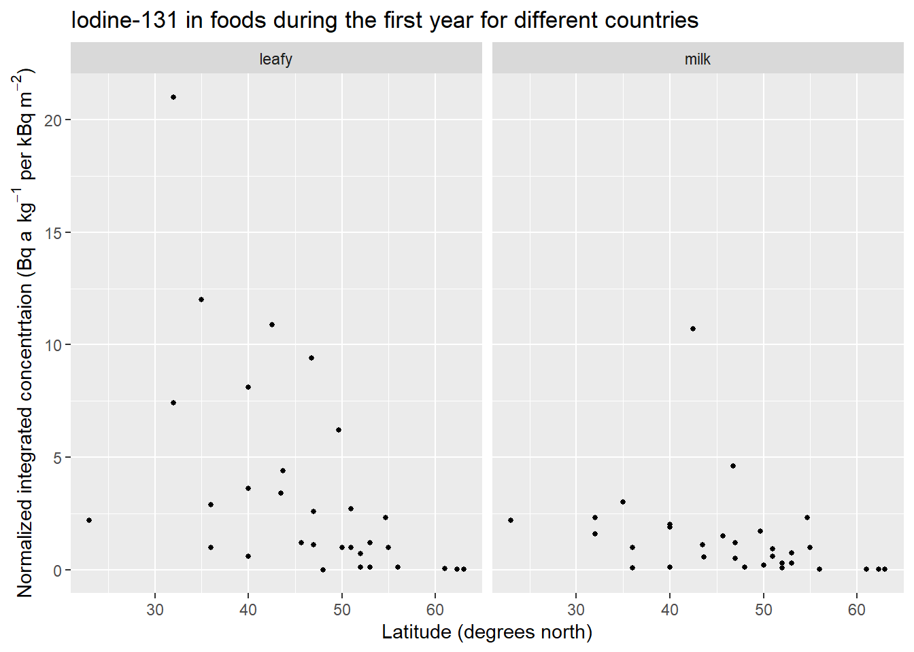
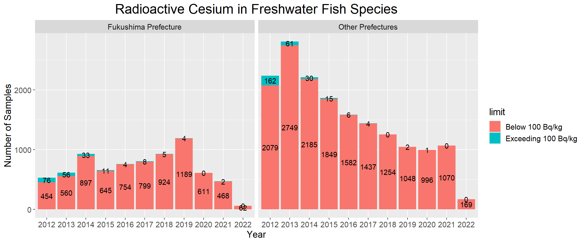

Chapter 5 Results
5.1 The Chernobyl Accident in 1986
5.1.1 Radionuclide Releases to, Dispersion and Deposition in Air

This plot is about the concentration of Iodine-131 (I-131), Caesium-134 (Cs-134), and Caesium-137 (Cs-137) in ground level air for these countries listed in the y-axis. As we can see from the plot, the concentration of I-131 is higher for all the countries than Cs-134 and Cs-137, whereas the concentration of Cs-134 is almost the lowest for all the countries.
In addition, these countries were grouped by “North Europe”, “Central Europe”, “West Europe”, “South Europe”, “West Asia”, “East Asia”, and “North America” and the order is determined by the median value of the concentration of these three radionuclides. It is clear that Central Europe suffers the most and North America suffers the least. This intuitively makes sense if we take their distances to Chernobyl into account.
Note these three x-axis have different scales. We designed the plot in this way since the concentration of I-131 is tremendously higher than the other two. If they used same scale, the points related to Cs-134 and Cs-137 would be very close to 0 and they would coincident.
5.1.2 Deposition

This plot is about the deposition of Iodine-131 (I-131), Caesium-134 (Cs-134), and Caesium-137 (Cs-137) for the same countries in the previous plot. The deposition of radioactive materials is mainly related to rainfall. Again, the deposition of I-131 is higher for all the countries than Cs-134 and Cs-137, whereas the concentration of Cs-134 is almost the lowest for all the countries.
In addition, these countries were grouped in the same way as the previous plot and the order is determined by the median as well. However, the order changes for other groups except Central Europe, East Asia, and North America. This might be due to the irregularity of weather. As mentioned before, the deposition pattern is related to rainfall. However, the distances to Chernobyl can still explain the unchanged order of Central Europe, East Asia, and North America.
Note these three x-axis have different scales. We designed the plot in this way since the deposition of I-131 is tremendously higher than the other two. If they used same scale, the points related to Cs-134 and Cs-137 would be very close to 0 and they would coincident.
5.1.3 Radionuclide Releases to, Dispersion and Deposition in
- I-131

This plot shows the normalized concentration of Iodine-131 (I-131) in leafy vegetables and milk products during the first year for different countries after the Chernobyl accident. The term normalized concentration represents integrated concentrations in foods normalized to the deposition densities, which better shows local conditions. Again, these points represent the same countries used in the previous plots and the x-axis means the latitude measured in degrees north.
For each kind of food, there seem to be a negative linear latitudinal dependence for the normalized concentration of I-131, which makes sense since distances to the Chernobyl do affect the concentration of radioactive materials. In addition, the line seems to be steeper for leafy vegetables than milk.
The normalized concentration of I-131 of these two foods seem to be at similar level, but leafy vegetables seems to have several outliers, which shows a comparatively higher concentration of I-131 per deposition density. This suggests us to choose milk instead of leafy vegetables for safety.
- Cs137

This plot shows the normalized concentration of Caesium-137 (Cs-137) in grain, leafy vegetables, meat, milk products and vegetables or fruits during the first year for previous countries after the Chernobyl accident.
For each kind of food, there seem to be a latitudinal dependence for the normalized concentration of Cs-137, which makes sense since distances to the Chernobyl do affect the concentration of radioactive materials. The linear trend is not very obvious for meat. For other foods, the slope of the lines seems to be similar.
Since this is about normalized concentration, we cannot really compare the level of concentration of each food, but meat seems to have many outliers, which shows a comparatively higher concentration of Cs-137. In addition, vegetables or fruits have several outliers as well.
The normalized concentration of Cs-137 of grain, leafy vegetables, and milk products seem to be at a similar level. Meat seems to have many outliers and a higher level of concentration of Cs-137. In addition, vegetables or fruits have several outliers as well, but the majority points are located in very bottom. This suggests us not to choose meat for safety.
5.1.4 Assessment of Doses to the Public
The term ‘dose equivalent’ means measuring the biological damage to living tissue as a result of radiation exposure. This time, these countries were grouped into “Europe”, “Asia” and “N.A.” (North America). This plot is about the average of Thyroid dose equivalent in the first year after the Chernobyl accident. Again, the order is determined by the median.
As we can see, the infants suffered more than adults in general. More specifically, the thyroid of infants in Bulgaria, Greece, Romania, Switzerland, and Yugoslavia were strongly damaged by exposure. The situations for the countries in the bottom shows that distances to the Chernobyl help reduce the exposures of radioactive materials.
This plot demonstrates a long-term trend for incidence rates of thyroid cancer
for people living in Belarus, Russian Federation (Bryansk, Kaluga, Orel and Tula oblasts) and Ukraine. Note that the rates were calculated as number of cases per 100,000 person-years.
As we can see, the rates are increasing for both female and male in all age groups “0-4”, “5-9”, “10-14”, “15-18” from 1982 to 2015. Note that this plot does not indicate there is a causation relationship between the Chernobyl accident and the increasing rates, it just shows a fact that the incidence rates of thyroid cancer did increasing for people in all age groups (under 18 years). Since we are using same scales for x and y, respectively, it is easy to see that the incidence rates of thyroid cancer for female are higher than those of male in general and incidence rates of thyroid cancer for people in Belarus are higher than those in two other regions.
5.2 The Fukushima-Daiichi Nuclear Power Station Accident in 2011
5.2.1 Radionuclide Releases to, Dispersion and Deposition in Food
5.2.1.1 Seafood
- Marine Fish Species

The results of the analysis of radioactive cesium (134Cs and 137Cs) in marine fish species showed that immediately after the nuclear power station accident in 2011, about 16% of samples collected in Fukushima prefecture exceeded the current standard limit (100 Bq/kg). Since then, the percentages of samples exceeding the standard limit tends to decrease over time, dropping to 0 starting in 2015. In Fukushima Prefecture, there have been no such cases for 6 consecutive years until 1 sample exceeding the standard limit was detected in 2021. In prefectures other than Fukushima, after 4 years without such cases, one sample was detected exceeding the standard limit in 2019, 2021 and 2022, respectively.
- Freshwater Fish Species


The results of the analysis of radioactive cesium in freshwater fish species showed that many freshwater fish in Fukushima and other prefectures exceeded the current standard limit (100 Bq/kg) shortly after the nuclear power plant accident in 2011. Since then, the percentages of samples exceeding the standard limit has decreased year by year, with the exception of Fukushima prefecture in 2017 and 2021 and prefectures other than Fukushima in 2019.
Comparing marine and freshwater fish species, we found that freshwater fish were more likely to be detected in excess of radiocaesium.
Apparently, the corresponding trend for prefectures other than Fukushima Prefecture showed its percentages of samples with radiocaesium concentrations exceeding 100 Bq/kg were lower than in Fukushima Prefecture, and thus, fish in Fukushima prefecture were more contaminated with radioactive cesium in the four years following the accident than in other prefectures. And the radiocaesium concentration decreases over time for fish species.
5.2.1.2 Agricultural Products
Rice, vegetables and fruits are the necessities of everyone’s daily life, providing some essential nutrients for our body and maintaining our health. So how do they perform in terms of radiocaesium concentrations? In order to see the change over time, we made a time series plot as shown below.

From the plot we can see that the radioactive cesium content of these essential agricultural products is basically within the safe range. About 0.06% of fruit samples exceeded the current standard limit in 2017, while other samples contained less than 100 Bq/kg of radioactive cesium.
Therefore, the accident has little impact on these agricultural products as a whole.
5.2.1.3 Raw Milk
Milk is essential for people especially for infants, it not only contains high-quality protein, but also trace elements, especially calcium, that our body needs for growth. The standard limit of radioactive cesium content of milk is half of that of general food, which is 50 Bq/kg.
Years here, such as 2010, are from April 2020 to March 2021, and so on. We see that about 4.62% of raw milk samples in 2010 exceeded the current standard limit, all those samples that exceeded were collected in March 2021 (but belongs to Year 2020 as defined), immediately after the accident, while all other samples contained less than 50 Bq/kg of radioactive cesium in the following years.
Therefore, there is little impact on raw milk after the first year of the accident.
5.2.2 Assessment of Doses to the Public
The two most important radionuclides are iodine and cesium, with varying dose levels. Iodine-131 is first absorbed by the thyroid after ingestion or inhalation, but it dissipates quickly because of its short half-life (8 days). The two isotopes of cesium (cesium-134 and cesium-137) have relatively long half-lives (2 and 30 years, respectively), and the exposure to the human body is fairly uniform.
The Committee’s estimates of municipality- and prefecture-average doses are intended to be characteristic of the average doses to the thyroid absorbed by people living in each municipality or prefecture for the first year after the Fukushima-Daiichi nuclear power station accident.
Due to the fact that the amount of data is too large to run in R, a dot plot is performed instead of a histogram or ridgeline plot.

The plot clearly showed the trend that younger people tend to absorb higher doses to the thyroid than older people. It’s also obvious that the closer to Fukushima prefecture, where the accident occurred, the higher dose absorbed to the thyroid.
Now let’s take a closer look at Fukushima prefecture.

The ridgeline plot allows us to easily compare distributions of the absorbed doses for people in Fukushima Prefecture (excluding evacuated areas) in the first year. We see that the distributions for all age groups are multimodal that have many peaks, and the shape of the curves for the three age groups looks very similar. The younger the age, the higher the absorbed dose, and the absorbed dose for one-year-old infants is about 4-5 times that of the adults. Meanwhile, the absorption range of the elderly is narrower.